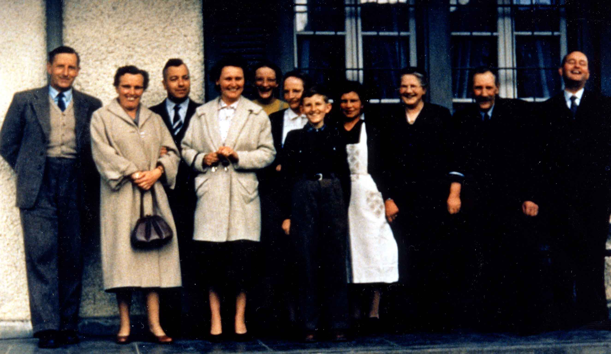

From left to right, the individuals above are: Fritz WERMUTH, Hanni BLATTI, Fritz BLATTI, Margrit GERBER, Marlies WERMUTH, Elisa WERMUTH, Hans WERMUTH, Anna LINDES, Aline WERMUTH-BERGER, Johann WERMUTH, and Fritz GERBER. (Identified by Marlies Wermuth, Alfred Wyss's grand niece. The photograph was taken by W. J. Rudge III ca. 1957).
Last updated on 27 Feb 2001